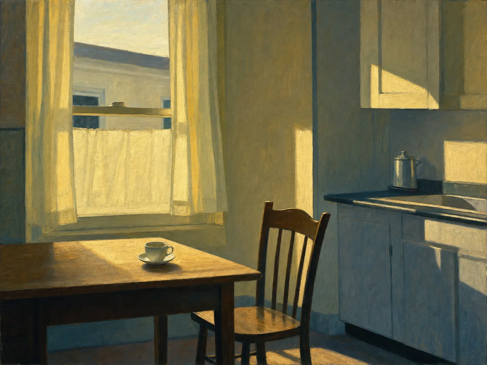

Working Notes on Craft
The Philosophy
of Writing
Notes on attention, revision, mercy, and communion in the everyday work of writing.

…that common heart, of which all sincere conversation is the worship, to which all right action is submission. Ralph Waldo Emerson, The Over-Soul
The Ordinary as Sanctuary
I have come to believe that the sacred is not sequestered in a far country, nor reserved for the ceremonies we have built to contain it. It abides here, in the unremarkable hours — in the kitchen light at six in the morning, in the faces we pass and neglect to see, in the small domestic liturgies we perform without knowing that we are performing them. Grace is not clamorous. It does not announce its arrival, nor wait upon our readiness. It waits, rather, in the everyday, with what I can only call patience, for the moment we consent to notice it.
I sometimes find the sacred closer in a homely woman singing badly in a cellar than in what has been painted on a ceiling.
For me, failure is often less a failure of faith than of attention. We mistake the urgent for the important and defer the essential to a season that never arrives. I try to remember that the love of others — the plain, unglamorous bond between one person and another — remains present beneath many quarrels and silences, even estrangements.
Mercy as Method
II was raised in a Boston Irish Catholic family where forgiveness, humility, and concern for others were understood less as principles to be announced than as obligations to be lived. No one was perfect; we were taught, largely through example, to forgive and forget. In the secluded Study Room my father designated as my own—a space I had not asked for but that, in retrospect, became my chapel—I often read and annotated the Bible. There I absorbed the underlying lesson of Philippians 2:3–4: to regard others with humility and to look beyond one’s own concerns toward the needs of others. Long before I could have expressed it, I began to feel that God’s grace and the presence of the Holy Spirit inhabited other people and the ordinary events of life; that the sacred abides in all things, both profane and hallowed.
I do not want to look past a body in decline — diabetic, gouty, bald, unsteady on its feet — on the way to something more dignified. A character’s diabetes, asthma, gout, baldness, and drinking need not be obstacles to holiness in a story; examined closely, they may be part of the ground from which it grows. Sentimentality, as I understand it, can begin when a writer flinches from the actual body in front of them. Compassion asks the writer to keep looking.
The Discipline of Attention
I did not arrive at a philosophy of writing by sitting down to invent one. It arrived the way most working philosophies do — backwards, out of a classroom, after years of watching what actually moved a roomful of unconvinced teenagers, and after years of noticing which of my own sentences held up under a second and third reading and which ones were only trying to impress me.
I do not think a sentence earns its seriousness by being about a serious subject. I think it earns seriousness by paying close, undistracted attention to something most writing would consider beneath its notice: a chipmunk crossing a patio, a scent of roses arriving mid-sentence, a bottle of suntan oil, a housedress with a pattern of tiny roses on it. My habit, which I did not choose so much as discover I already had, is to place the ordinary and the unspeakable in the same paragraph — a teacup poured, a lie confessed; a hand laid on a bald scalp, a body quietly dying under it.
I often find that an ordinary detail is more than it first appears to be, and that patience is one part of a writer’s discipline: the willingness to watch a small thing long enough for further meanings to emerge. I hope that if I watch closely and long enough, it may suggest what it is for.
I believe fire is not only punishment. In the right light, at the right hour, upon the right stretch of ordinary water, it is the very material of which glory is made.
Revision as Listening
This is, I recognize, a philosophy built on faith in revision as much as on any single technique. I do not think the religious architecture in a story like “Assumptions” arrived because I sat down and planned a Marian allegory. I think it arrived because I kept returning to the same image — a woman anointed with oil on a beach, a housedress, a sea catching fire in the late light — until the language underneath the language declared itself.
Revision, for me, is less a matter of correcting mistakes than of listening harder to a draft that may know more than I did when I wrote it. I try to revise a sentence until it has discovered more than I knew when I began it; for me, that is not necessarily a failure of planning, but part of the work.
Writing as Communion
I have said before that teaching is communion — that a roomful of unconvinced teenagers and one exhausted teacher, meeting honestly for fifty minutes, amounts to a kind of sacrament administered without a priest. I have come to believe the same is true of writing itself, and I only ever discovered it backwards, sentence by sentence, the way a person discovers most things they already half-believed.
A sentence, when it is working, is not a message sent from a writer who already knows something to a reader who does not. It is closer to a shared table. I sit down not entirely certain what I mean, and the sentence, if I am patient enough with it, tells me — the way a good conversation tells both people something neither of them arrived already knowing. That is the first communion: between the writer and the page, two parties neither of whom fully controls what gets said.
The second is between the writer and the subject — and here I mean subject in the oldest sense, the person or memory or ordinary object being written about. I cannot write about a grandmother anointing a bald scalp with tanning oil, or a mother’s calloused heel, or a housedress with roses on it, without in some sense sitting with that person again, at that table, in that weather. Writing does not preserve the dead so much as it reopens a chair for them.
My family members are my prayers. I wrote that once and meant it more literally than the sentence lets on. To write about a person with enough attention to get their gestures right — the exact word they used, the exact slant of light in the kitchen when they said it — is to hold them in mind the way a prayer holds its subject in mind: not to fix them, not to improve them, only to keep them present a little longer than memory alone would manage.
The third communion is the one I have the least control over: the one between the finished page and a reader I will likely never meet. A poem written out of one family’s grief may become, in a stranger’s late-night reading, a poem about their own. I do not take this as a failure of specificity, but as one reason to write something down rather than feel it privately.
Comedy and Reverence, in the Same Breath
Finally — and this is less a technique than a debt I owe my own upbringing — I do not believe moral seriousness and comedy are opposites, or that reverence and mockery cannot occupy the same sentence. My characters are cruel and devoted in the same breath because the people I grew up among were cruel and devoted in the same breath, and I have never trusted fiction that resolves that contradiction too neatly.
I do not see comedy and reverence as opposites. A family may be cruel and devoted in the same breath, and fiction that resolves this contradiction too neatly can miss something important.
Ten Working Reminders
- I look for the sacred in unremarkable hours rather than only in formal ceremony.
- I sometimes find the sacred closer in a homely woman singing badly in a cellar than in what has been painted on a ceiling.
- I try to treat attention as important as belief.
- I try to summon a character into fuller being before judging them.
- I do not want to look past a body in decline on the way to something more dignified.
- An ordinary detail may hold more than it first appears to hold.
- I revise until a sentence has found more than I knew when I began it.
- I sometimes see fire as more than punishment, depending on its setting and light.
- I think of writing as a table shared by the page, the subject, and a reader I may never meet.
- I try to leave room for comedy and reverence to coexist.
I try to hold imagination in trust rather than claim to own it.
For me, writing is more than self-expression; it is also a form of stewardship.
Drawn from “A Working Philosophy,” “Credo,” and “Writing as Communion” — James Mulhern's own reflections on craft collected on this site.